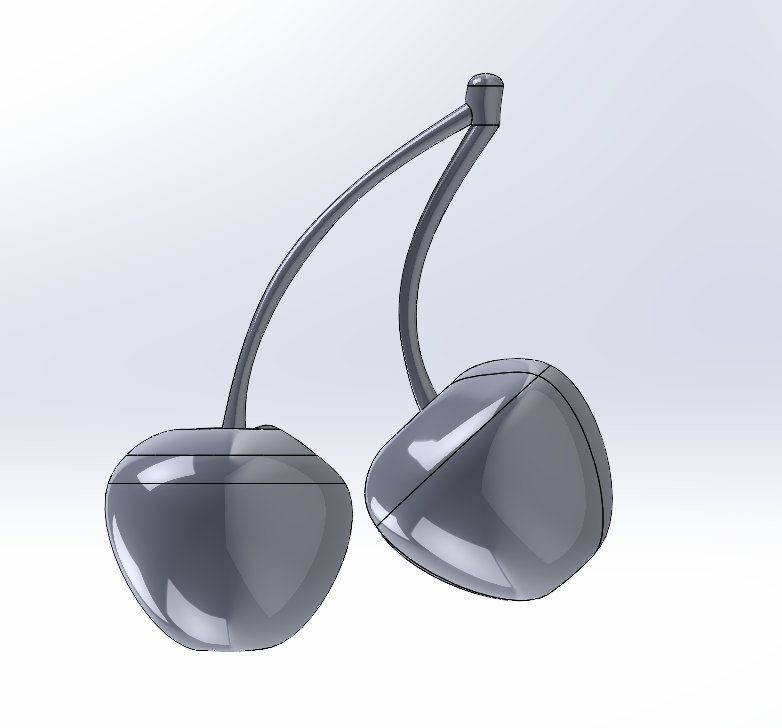

Engineering use
Surfacing and rendering are also used in engineering work: aerodynamic fairings, ergonomic housings, and design communication all depend on controlling curvature and presenting geometry convincingly.
Design / Fabrication, 2024
A photorealistic cherry study built through surface modeling and rendered in KeyShot.
Parametric CAD is built for prismatic engineering parts; organic forms expose its limits. This study used surface modeling to construct cherry geometry with continuous curvature, subtle asymmetry, and stem transitions, then developed materials and lighting in KeyShot to push the render toward photorealism.

Surfacing and rendering are also used in engineering work: aerodynamic fairings, ergonomic housings, and design communication all depend on controlling curvature and presenting geometry convincingly.